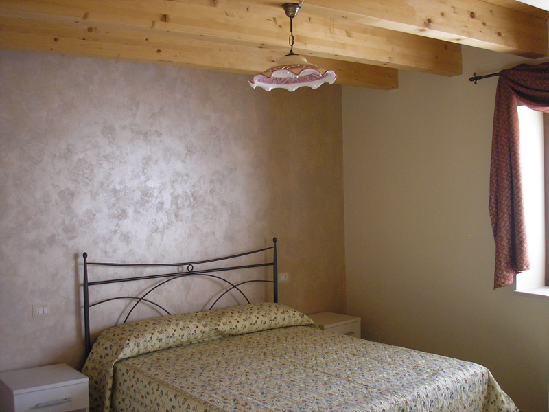
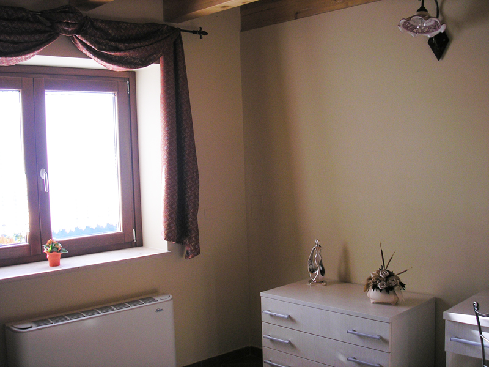

Tradizione & Esperienza
Molti a Casalbuono sentivano la mancaza della locanda di zia Lucia. La famiglia Veneziano desiderava da tempo ripercorrere quell'esperienza e restituire a queste mura la semplicità e allegria di un tempo.
Finalmente nel 2011 sono riusciti ad inaugurare questa nuova struttura che vuole essere accogliente e moderna, in grado di offrire un periodo di relax, nel clima tipico della casa di campagna.
Abbiamo cercato di riunire l'atmosfera tradizionale della casa di campagna e il comfort di un abitazione moderna.
Ultimo avamposto campano
Sulla strada statale 19, a 10km dall'uscita "Padula-Buonabitacolo", Casalbuono rappresenta l'ultimo comune della campania già in sapore di Lucania.

Con i suoi 600 metri sul livello del mare, Casalbuono offre un clima fresco d'estate e secco d'inverno. Le Rose Residence è la prima casa del paese con ampio giardino ed orto, dove è possibile rinfrancarsi dallo stress cittadino e tornare ad osservare i ritmi della natura. Il posto ideale per organizzare una passeggiata in montagna o anche un escursione al mare nel vicino Golfo di Policastro.
Da Casalbuono è anche possibile raggiungere in breve: la Certosa di Padula, le Grotte di Pertose, Maratea, Teggiano e Moliterno.
Per saperne di piu' su Casalbuono
Appartamenti in affitto
Se cercate una casa vacanze o un appartamento nel Vallo di Diano, Le Rose Residence offre 5 appartamenti in affitto, una dimora elegante e confortevole con trattamento Bed & Breakfast (B&B).
Tutti gli appartamenti sono dotati di bagno e cucina indipendente.